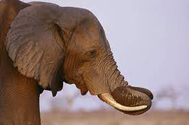
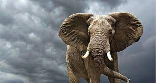

Elefante
Hipervínculos externos
Especies y habitats
National Geographic

Hipervínculos Internos
Menú
Elefante
Caracteristicas
Alimentación
Principales Tipos
Elefantes
¿Qué son los elefantes?
Los elefantes son mamíferos terrestres de gran tamaño que pertenecen a la familia Elephantidae y al orden Proboscidea. Son conocidos por su tamaño impresionante, sus grandes orejas, su trompa distintiva y, en el caso de los elefantes machos, sus colmillos alargados.
Característicass
Características destacadas de los elefantes:
Tamaño impresionante: Los elefantes son los animales terrestres más grandes que existen. Los elefantes africanos de sabana pueden alcanzar una altura de hasta 3,3 metros en el hombro y pesar alrededor de 6 toneladas. Los elefantes asiáticos son un poco más pequeños, con una altura promedio de 2,7 metros y un peso de aproximadamente 5 toneladas.
Trompa distintiva: Una de las características más reconocibles de los elefantes es su trompa larga y flexible. La trompa, que está formada por la fusión de la nariz y el labio superior, es extremadamente versátil y hábil. Los elefantes la utilizan para agarrar objetos, alimentarse, beber agua, comunicarse y mostrar afecto.
Grandes orejas: Los elefantes tienen orejas grandes y distintivas que les ayudan a regular su temperatura corporal. A través del aleteo de sus orejas, los elefantes pueden disipar el calor y refrescarse en climas cálidos. Además, las orejas también les permiten detectar sonidos de baja frecuencia y comunicarse con otros elefantes a través de movimientos específicos.
Colmillos en los elefantes machos: Solo los elefantes machos poseen colmillos, que son dientes incisivos alargados. Los colmillos están hechos de marfil y crecen continuamente a lo largo de la vida del elefante. Los utilizan para defenderse, desenterrar alimentos y luchar entre sí. Tristemente, la caza furtiva de elefantes por sus colmillos de marfil ha llevado a una disminución significativa de las poblaciones de elefantes en muchas partes del mundo.
Inteligencia y comportamiento social: Los elefantes son animales altamente inteligentes y sociales. Viven en grupos llamados manadas, lideradas por una hembra adulta conocida como matriarca. Los elefantes tienen una estructura social compleja y establecen fuertes lazos familiares. También muestran comportamientos sociales complejos, como el cuidado de los más jóvenes y la cooperación en la búsqueda de alimentos y el cuidado del grupo.
Longevidad: Los elefantes tienen una vida larga en comparación con otros mamíferos. En la naturaleza, pueden vivir hasta 50 o 60 años, aunque se han registrado casos de elefantes que han alcanzado los 70 años o más en cautiverio.

Alimentación
Los elefantes son animales herbívoros, lo que significa que se alimentan exclusivamente de materia vegetal. Su dieta principal consiste en una variedad de alimentos vegetales, que pueden incluir lo siguiente: Hierbas, ramas y hojas, corteza, frutas y vegetales, entre otros.
Debido a su gran tamaño y sus altos requerimientos energéticos, los elefantes necesitan consumir grandes cantidades de alimentos para satisfacer sus necesidades nutricionales. Se estima que un elefante adulto puede ingerir entre 100 y 300 kilogramos de alimentos al día, dependiendo de la disponibilidad de recursos en su entorno.
Principales Tipos
Elefante africano de sabana (Loxodonta africana): Esta especie se encuentra en varias regiones de África, principalmente en las áreas de sabana y pastizales. Se distribuye en países como Kenia, Tanzania, Sudáfrica, Botsuana, Zimbabue y Namibia, entre otros.
Elefante africano de bosque (Loxodonta cyclotis): El elefante africano de bosque se encuentra en las densas selvas tropicales y bosques de África central y occidental. Su rango de distribución incluye países como Gabón, Camerún, República Democrática del Congo, Guinea Ecuatorial y Costa de Marfil, entre otros.
Elefante asiático (Elephas maximus): Esta especie se encuentra en diversos países del sur de Asia, incluyendo India, Sri Lanka, Tailandia, Laos, Camboya y Vietnam. Aunque su distribución histórica abarcaba una gran parte de la región, su número se ha reducido y ahora se encuentran principalmente en áreas protegidas y bosques.